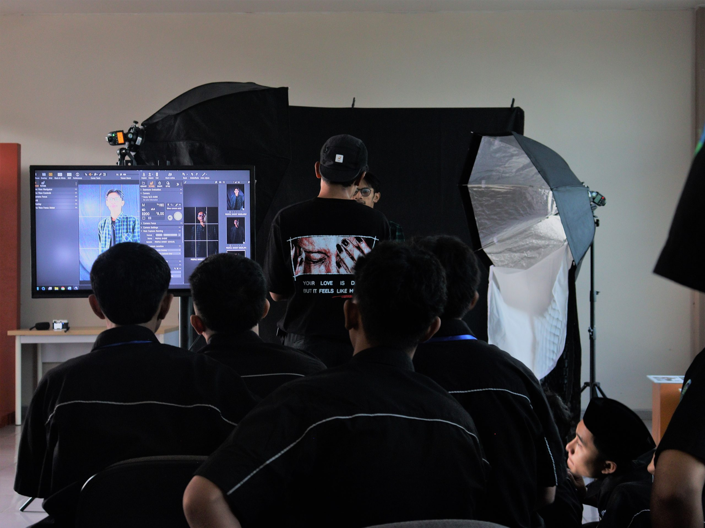
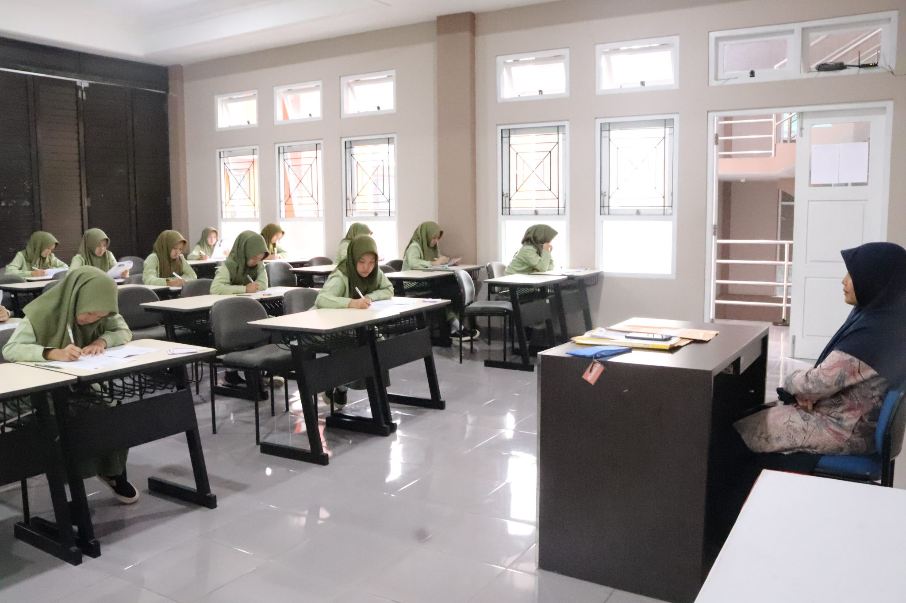
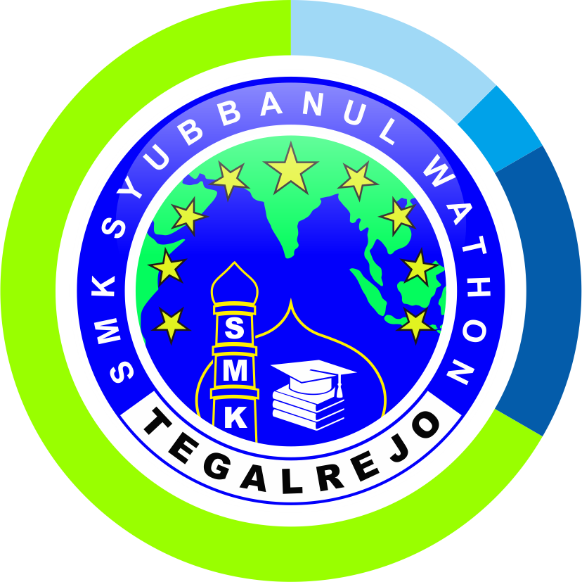
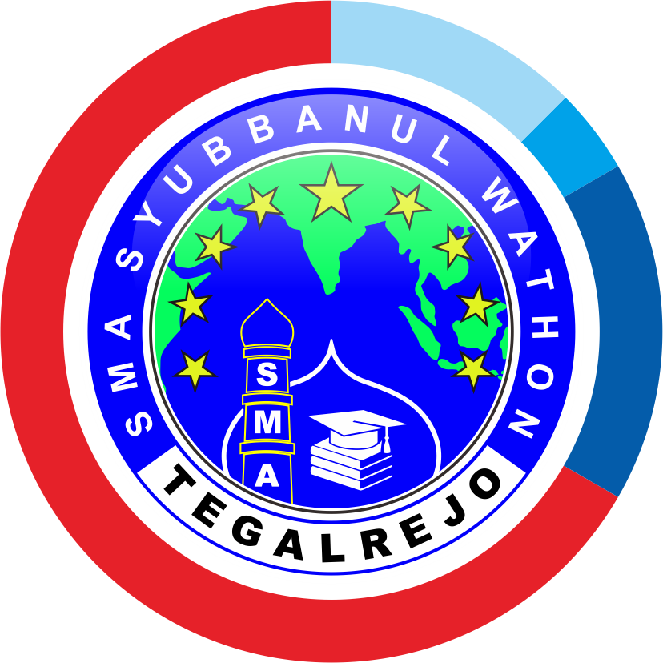
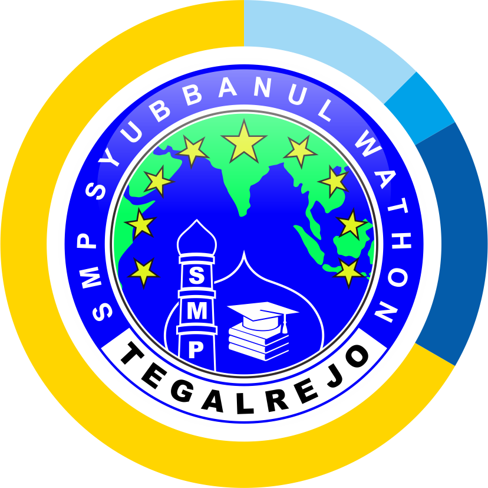
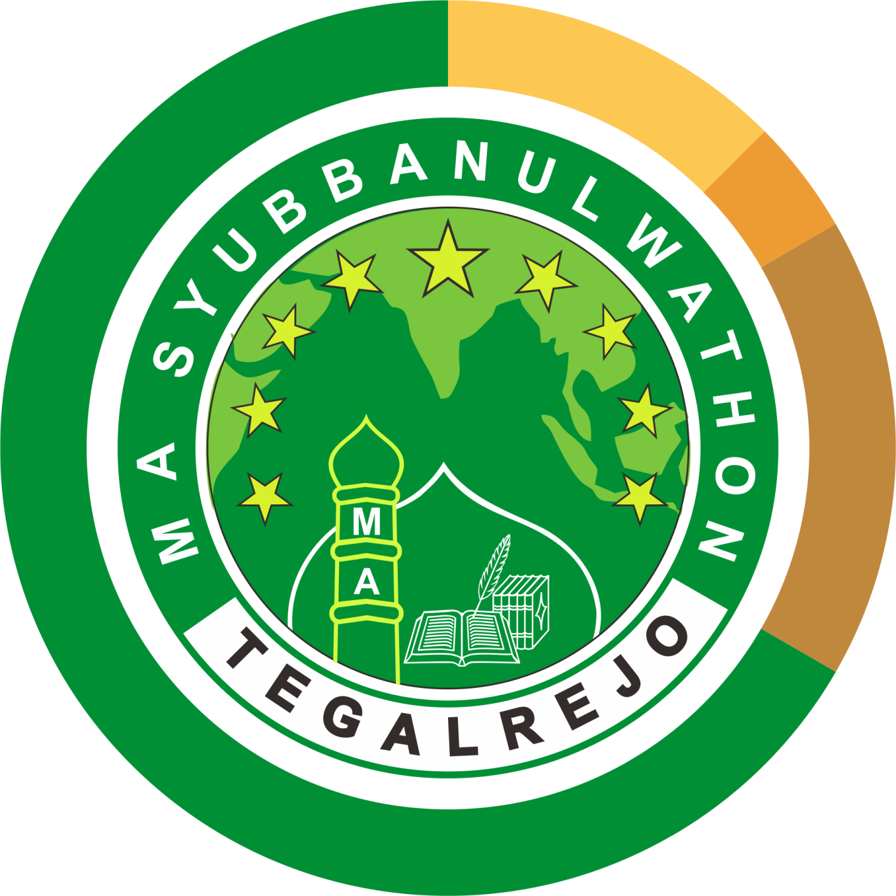
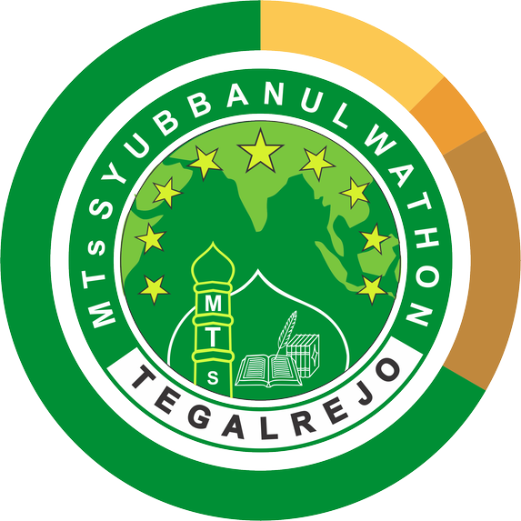

Galeri Pesantren
Dokumentasi Kegiatan Santri
Momen-momen berharga dalam keseharian santri di lingkungan Syubbanul Wathon.




Pondok Pesantren Syubbanul Wathon menyelenggarakan pendidikan terpadu mencakup SMP, MTs, SMA, SMK Kejuruan, dan MA dengan kurikulum pesantren modern.
Menampilkan waktu sholat presisi berdasarkan lokasi Anda
04:15 WIB
11:35 WIB
14:48 WIB
17:42 WIB
18:52 WIB
Pilihan jenjang formal terakreditasi yang memadukan kurikulum nasional dan nilai pesantren.

KEJURUAN VOKASIMencetak tenaga ahli siap kerja dengan berbagai jurusan keahlian bernilai tinggi di industri

TINGKAT MENENGAH ATASPersiapan unggul menuju perguruan tinggi negeri & luar negeri dengan peminatan IPA/IPS

TINGKAT MENENGAH PERTAMAFokus pada pembentukan karakter islami, penguasaan sains dasar, serta tahfidz Al-Qur'an jus 30.

TINGKAT MENENGAH ATASKajian ilmu keislaman mendalam (Madrasah Aliyah) bidang Keagamaan, MIPA, dan IPS.

TINGKAT MENENGAH PERTAMAPendidikan keagamaan mendalam, kitab kuning dasar, bahasa Arab & Inggris terpadu.
Informasi terkini mengenai kegiatan santri, jadwal akademik, dan pendaftaran.
12 Oktober 2026
Segera daftarkan putra/putri Anda. Tersedia kuota khusus untuk pendaftar gelombang pertama dengan potongan biaya administrasi pendaftaran.
Baca Selengkapnya28 September 2026
Alhamdulillah, delegasi MTs dan MA Syubbanul Wathon berhasil meraih juara umum pada kompetisi MTQ tahun ini. Selamat kepada para santri!
Lihat Dokumentasi15 September 2026
Ujian akan dilaksanakan pada minggu pertama bulan Desember. Santri diwajibkan menyelesaikan setoran hafalan sebagai syarat pengambilan kartu.
Unduh JadwalBerbagai wadah pengembangan potensi keislaman, akademik, seni, dan keterampilan santri di dalam asrama pesantren.
Pendalaman kajian fiqih, tafsir, dan nahwu-shorof ala pesantren salafiyah untuk memperdalam keilmuan syariat.
Melatih kreativitas seni musik islami, keharmonisan nada, dan kedisiplinan korps musik santri.
Latihan pidato tiga bahasa (Indonesia, Arab, Inggris) untuk membentuk mental kepemimpinan dan dakwah santri.
Seni menulis indah ayat Al-Qur'an dengan berbagai kaidah khot (Naskhi, Tsuluts, Diwani, dll).
Pelatihan penulisan berita, majalah dinding, fotografi kegiatan, hingga pengolahan media digital pesantren.
Pengembangan kreativitas visual digital seperti pembuatan poster dakwah, animasi, dan editing video pendek.
Momen-momen berharga dalam keseharian santri di lingkungan Syubbanul Wathon.


Sub Judul Jurusan
Deskripsi pelajaran di jurusan ini...
Jawaban atas pertanyaan umum seputar pendaftaran serta estimasi rincian biaya pendidikan santri baru.
| Jenjang Pendidikan | Pendaftaran & Administrasi | Infaq Pengembangan & Asrama | Seragam & Atribut | Total Estimasi Awal |
|---|---|---|---|---|
| SMP Syubbanul Wathon | Rp 500.000 | Rp 4.500.000 | Rp 1.000.000 | Rp 6.000.000 |
| MTs Syubbanul Wathon | Rp 500.000 | Rp 4.500.000 | Rp 1.000.000 | Rp 6.000.000 |
| SMA Syubbanul Wathon | Rp 600.000 | Rp 5.500.000 | Rp 1.200.000 | Rp 7.300.000 |
| SMK Syubbanul Wathon | Rp 600.000 | Rp 6.000.000 | Rp 1.200.000 | Rp 7.800.000 |
| MA Syubbanul Wathon | Rp 600.000 | Rp 5.500.000 | Rp 1.200.000 | Rp 7.300.000 |
Syarat utamanya meliputi mengisi formulir pendaftaran online, menyerahkan fotokopi Kartu Keluarga (KK), Akta Kelahiran, NISN, serta pas foto terbaru dan transkrip nilai/rapor semester terakhir.
Ya, seluruh peserta didik di bawah naungan Yayasan Syubbanul Wathon diwajibkan tinggal di asrama pesantren guna mendukung pembentukan karakter, kedisiplinan, dan pengawasan ibadah 24 jam.
Pembayaran dapat dilakukan secara transfer melalui rekening resmi yayasan atau dibayarkan secara langsung melalui sekretariat pendaftaran di kampus terpadu Syubbanul Wathon.
Tersedia potongan khusus atau keringanan biaya bagi calon santri yang memiliki prestasi akademik tingkat kabupaten/provinsi maupun hafalan Al-Qur'an (tahfidz) minimal 3 juz.
Kunjungi Kampus Terpadu Pondok Pesantren Syubbanul Wathon di Magelang / Salatiga.
Pondok Pesantren Syubbanul Wathon
Jl. Raya Tegalrejo - Magelang, Kompleks Pesantren Syubbanul Wathon, Jawa Tengah.